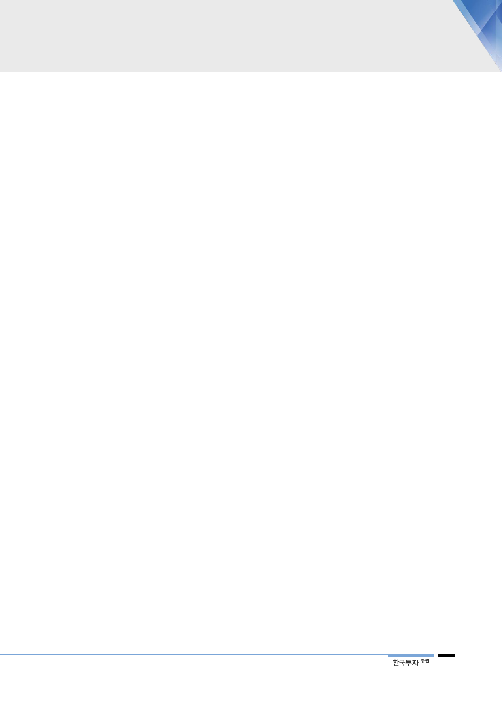

IMO의 황 함유량 규제는
정유업계의 기회 요인
중간유분 수요 증가로
마진 개선될 것
고유황 연료유 의존도 높은
정유사들에게는 타격
현대오일뱅크는 높은
고도화비율로 정제마진 큰
폭 개선될 전망
공급부족 감안시, 등경유
및 저유황 연료의 가격은
유가 대비 급등할 전망
4. 현대오일뱅크, 제품 믹스 개선과 원가 절감 전망
IMO의 황 함유량 규제는 준비된 정유 업계의 기회 요인이다. 첫째, 고유황 연료
유에서 중간유분으로 수요가 급격히 전환되며 두 제품군의 마진이 양극화될 것이
다. 둘째, 고유황 연료유에 대한 의존도가 높은 정유사들이 기존 설비를 가동하지
못하면서 전체 정제설비 가동률이 하락할 것이다. 셋째, 황 함량이 높은 두바이유
의 경우 WTI 원유 및 브렌트유 대비 가격이 약세 전환할 가능성이 크다. 현대오
일뱅크가 이러한 변화에 따른 수혜를 기대할 수 있는 최적의 여건을 갖추고 있다.
선박에 주로 사용되는 고유황 연료유 소비량은 세계 연료유 소비량의 절반을 차
지하는 것으로 추정된다. 우리는 규제 초반에 고유황 연료유 수요 가운데 최소
70%가 중간유분으로 전환되어 중간유분 수요가 2.7mbpd 증가할 것으로 전망한
다. 이는 2017년 세계 중간유분 수요의 8%에 해당하며, 중간유분 의존도가 높은
정유사들의 마진을 한 단계 끌어올리기에 충분한 수준이다.
반면 고유황 연료유 비중이 높고 고도화 설비를 갖추지 못한 정유사의 경우 큰
타격이 예상된다. 선박용 고유황 연료유 수요가 증발하면 중국의 teapot 대부분
은 가동을 멈출 수밖에 없다. 보수적으로 가정해 중국 teapot 가동률이 2020년
50% 하락할 경우 그 효과는 1mbpd 규모의 정제설비가 폐쇄되는 것과 같다. 신
규 설비가 예정대로 가동되더라도 2020년 세계 정제설비 용량은 전년대비 감소
할 가능성이 크다.
현대오일뱅크의 경우 중간유분에 해당하는 등경유 비중이 55%를 넘어서는 반면,
고유황 연료유 비중은 0%에 근접한다. 따라서 IMO 영향으로 가격이 상승할 것
으로 예상되는 제품군의 비중은 절대적으로 높고 가격이 하락할 제품군은 없어
큰 폭의 실적 개선이 예상된다. 고유황 연료유 가격이 현재보다 15달러/배럴 하
락하고 동일한 폭으로 등경유 가격이 오른다고 가정할 경우 아시아 정제마진은
35% 개선된다. 그러나 현대오일뱅크의 경우 40%에 가까운 고도화비율로 인해
정제마진이 88% 개선된다. 또한 원유의 탈황설비 비율이 국내정유사 중 가장 높
은 점을 감안하면 현대오일뱅크는 황 함유량이 높은 유종의 가격 하락에 따른 부
가적 마진 개선 효과도 누릴 수 있다.
한편, 주요 전망기관은 2020년 Dubai 대비 고유황 연료유 스프레드는 -30달러/
배럴, 등경유 스프레드는 21~40달러/배럴, 그리고 저유황 연료유 스프레드는
10~30달러/배럴을 전망하고 있다. 현재 예상되는 등경유 및 저유황 연료유의 공
급부족 상황을 감안할 때, 이들 가격의 유가 대비 급등 가능성은 피할 수 없을 것
으로 예상된다.
IMO의 고유황 연료유 규제가 실시되는 2020년에는 최적화된 제품 믹스뿐만 아
니라 원재료 구매 비용 또한 절감될 것으로 예상된다. 마진이 확대될 것으로 예상
되는 제품군의 비중이 국내 정유사 중 SK이노베이션 다음으로 가장 높다. 동시
13